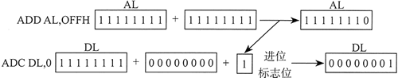

首页 > 编程笔记
汇编语言ADC指令：带进位加法
ADC（带进位加法）指令将源操作数和进位标志位的值都与目的操作数相加。该指令格式与 ADD 指令一样，且操作数大小必须相同：
同样，下述指令实现两个 32 位整数相加 (FFFF FFFFh+ FFFF FFFFh)，产生的 64 位和数存入 EDX:EAX，其值为：0000 0001 FFFF FFFEh：
该过程接收两个指针，存入 ESI 和 EDI，分别指向参与加法的两个整数。EBX 寄存器指向缓冲区，用于存放和数，该缓冲区的前提条件是必须比两个加数大一个字节。此外，过程还用 ECX 接收最长加数的长度。
两个加数都需要按小端顺序存放，即其最低字节存放在该数组的起始地址。过程代码如下所示，添加了代码行编号便于进行详细讨论：
（LOOP 指令不会修改 CPU 的状态标志位。）再次循环时，第 17 行进行的是第二对字节的加法，其中包括进位标志位的值。因此，如果第一次循环过程产生了进位，则第二次循环就要包括该进位。按照这种方式循环，直到所有的字节都完成了加法。然后，最后的第 24 行和第 25 行检查操作数最高字节相加是否产生进位，若产生了进位，就将该值加到和数多岀来的那个字节中。
下面的代码示例调用 Extended_Add，并向其传递两个 8 字节的整数。要注意为和数多分配一个字节：
ADC reg, reg
ADC mem, reg
ADC reg, mem
ADC mem, imm
ADC reg, imm
mov dl, 0
mov al, 0FFh
add al, 0FFh ; AL = FEh
adc dl, 0 ; DL/AL = OlFEh

同样，下述指令实现两个 32 位整数相加 (FFFF FFFFh+ FFFF FFFFh)，产生的 64 位和数存入 EDX:EAX，其值为：0000 0001 FFFF FFFEh：
mov edx, 0
mov eax, 0FFFFFFFFh
add eax, 0FFFFFFFFh
adc edx, 0
扩展加法示例
接下来将说明过程 Extended_Add 实现两个大小相同的扩展整数的加法。利用循环，该过程将两个扩展整数当作并行数组实现加法操作。数组中每对数值相加时，都要包括前一次循环迭代执行的加法所产生的进位标志位。实现过程时，假设整数存储在字节数组中，不过 本例很容易就能修改为双字数组的加法。该过程接收两个指针，存入 ESI 和 EDI，分别指向参与加法的两个整数。EBX 寄存器指向缓冲区，用于存放和数，该缓冲区的前提条件是必须比两个加数大一个字节。此外，过程还用 ECX 接收最长加数的长度。
两个加数都需要按小端顺序存放，即其最低字节存放在该数组的起始地址。过程代码如下所示，添加了代码行编号便于进行详细讨论：
;------------------------------------------
Extended_Add PROC
; 计算两个以字节数组存放的扩展整数之和。
; 接收：ESI和EDI为两个加数的指针
; EBX 为和数变量指针，
; ECX为
; 相加的字节数。
; 和数存储区必须比输入的操作数多一个字节。
; 返回：无
;------------------------------------------
pushad
clc ;清除进位标志位
L1: mov al, [esi] ;取第一个数
adc al, [edi] ;与第二个数相加
pushfd ;保存进位标志位
mov [ebx], al ;保存部分和
add esi, 1 ;三个指针都加1
add edi, 1
add ebx, 1
popfd ;恢复进位标志位
loop L1 ;重复循环
mov byte ptr [ebx], 0 ;清除和数高字节
adc byte ptr [ebx], 0
popad ;加上其他的进位
ret
Extended_Add ENDP
当第14行和第15行将两个数组的最低字节相加时，加法运算可能会将进位标志位置 1。因此，第16行将进位标志位压入堆栈进行保存就很重要，因为在循环重复时会用到进位 标志位。第17行保存了和数的第一个字节，第18〜20行将三个指针（两个操作数，一个和数）都加 1。第 21 行恢复进位标志位，第 22 行将循环返回到第 14 行。（LOOP 指令不会修改 CPU 的状态标志位。）再次循环时，第 17 行进行的是第二对字节的加法，其中包括进位标志位的值。因此，如果第一次循环过程产生了进位，则第二次循环就要包括该进位。按照这种方式循环，直到所有的字节都完成了加法。然后，最后的第 24 行和第 25 行检查操作数最高字节相加是否产生进位，若产生了进位，就将该值加到和数多岀来的那个字节中。
下面的代码示例调用 Extended_Add，并向其传递两个 8 字节的整数。要注意为和数多分配一个字节：
.data
op1 BYTE 34h,12h,98h,74h,06h,0A4h,0B2h,0A2h
op2 BYTE 02h,45h,23h,00h,00h,87h,10h,80h
sum BYTE 9 dup(0) ; = 0122C32B0674BB5736h
.code
main PROC
mov esi,OFFSET op1 ; 第一个操作数
mov edi,OFFSET op2 ; 第二个操作数
mov ebx,OFFSET sum ; 和数
mov ecx,LENGTHOF op1 ; 字节数
call Extended_Add
; 显示和数
mov esi,OFFSET sum
mov ecx,LENGTHOF sum
call Display_Sum
call Crlf
上述程序的输出如下所示，加法产生了一个进位：0122C32B0674BB5736
过程 Display_Sum 按照正确的顺序显示和数，即从最高字节开始依次显示到最低字节：
Display_Sum PROC
pushad
; 指向左后一个数组
add esi,ecx
sub esi,TYPE BYTE
mov ebx,TYPE BYTE
L1: mov al,[esi] ; 取一个数组字节
call WriteHexB ; 显示该字节
sub esi,TYPE BYTE ; 指向前一个字节
loop L1
popad
ret
Display_Sum ENDP
关注公众号「站长严长生」，在手机上阅读所有教程，随时随地都能学习。内含一款搜索神器，免费下载全网书籍和视频。

微信扫码关注公众号